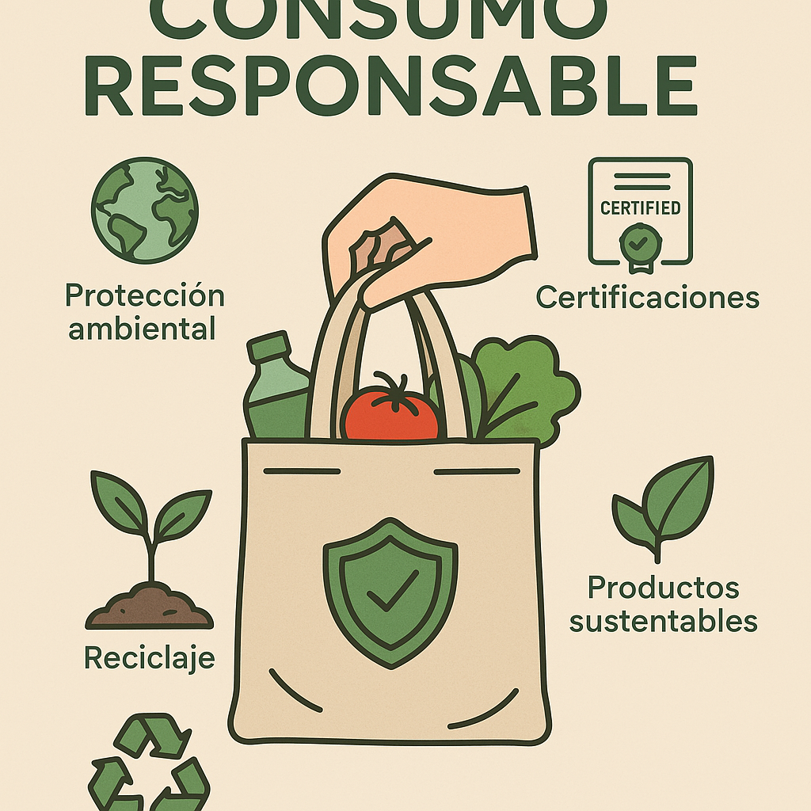

[Imagen: Consumo Responsable]

Consumo Responsable en el Aula
Análisis crítico del desperdicio de materiales en entornos educativos.
Leer artículo →Este sitio web simula la navegación completa requerida para la presentación del proyecto escolar de desarrollo sostenible.
Institución: UVM Campus Saltillo
Los ODS forman parte de la Agenda 2030 de la ONU para equilibrar la sostenibilidad social, económica y ambiental.
Nuestro equipo eligió este objetivo porque busca reducir la huella ecológica mediante un cambio drástico en los métodos de consumo de bienes y recursos dentro de nuestro campus universitario.
Artículos académicos e informativos acerca de nuestro enfoque de sustentabilidad.

Análisis crítico del desperdicio de materiales en entornos educativos.
Leer artículo →Cómo reincorporar residuos escolares a un nuevo ciclo de utilidad.
Leer artículo →Indicaciones de la Actividad 7.2 - Libro Mayahii
Introducción: Reducir el consumo innecesario requiere educación y voluntad colectiva.
En este espacio se presenta un análisis detallado sobre el desecho de plásticos de un solo uso en las cafeterías universitarias. La propuesta del equipo incluye la implementación de termos reutilizables institucionales para mitigar la generación masiva de basura diaria.
Indicaciones de la Actividad 7.2 - Libro Mayahii
Introducción: Pasar del modelo de usar y tirar a un ciclo continuo de reutilización.
Este artículo evalúa la viabilidad de transformar el papel recolectado en los cubículos de impresión en libretas y material didáctico para nuevas generaciones. Un enfoque circular disminuye los costos operativos del campus a la vez que cumple metas ecológicas.
Únete como voluntario y ayúdanos a cambiar las estadísticas de consumo en el campus.